<mat-toolbar color="primary" class="header mat-elevation-z3">
  <mat-toolbar-row>
    <span
      ><a href="/">
         </a
    ></span>
    <span class="spacer"></span>
    <button
      mat-icon-button
      mat-card-avatar
      class="header-avatar"
      [matMenuTriggerFor]="menu"
      aria-label="Example icon-button with a menu"
    ></button>
    <mat-menu #menu="matMenu">
      <button mat-menu-item>
        <mat-icon>account_circle</mat-icon>
        <span>Perfil</span>
      </button>
      <button mat-menu-item>
        <mat-icon>settings</mat-icon>
        <span>Configurações</span>
      </button>
      <mat-divider></mat-divider>
      <button mat-menu-item disabled>
        <mat-icon>logout</mat-icon>
        <span>Sair</span>
      </button>
    </mat-menu>
  </mat-toolbar-row></mat-toolbar
>
